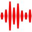

Sonetto introduttivo
Sotto dura stagion dal sole accesa
Langue l’huom, langue ‘l gregge, ed arde ‘l pino,
Scioglie il cucco la voce, e tosto intesa
Canta la tortorella e ‘l gardellino.
Zeffiro dolce spira, ma contesa
Muove Borea improvviso al suo vicino;
E piange il Pastorel, perché sospesa
Teme fiera borasca, e ‘l suo destino;
Toglie alle membra lasse il suo riposo
Il timore de’ lampi, e tuoni fieri
E de mosche, e mosconi il stuol furioso:
Ah che pur troppo i suoi timor sono veri
Tuona e fulmina il cielo grandinoso
Tronca il capo alle spiche e a’ grani alteri.
La stagione degli eccessi, del caldo afoso e dei temporali impetuosi è descritta
dall'intrecciarsi dei suoni di violini e violoncelli in uno spartito in Sol minore.
Il pastore è tormentato da calura e zanzare, ancora non sa che qualcosa di terribile e maestoso
lo attende nell' arsura estiva.
I movimenti della composizione sono: Allegro ma non troppo-Adagio-Presto.
Allegro ma non troppo
Le pause tra gli acuti dei violini e i suoni profondi dei violoncelli ben descrivono
il respiro di chi è oppresso dal sole cocente.
Il pastore vede in lontananza il raggrupparsi di cumuli nembi. Il suono diviene incalzante, annuncio dell'imminente temporale.
 Ascolta il Primo movimento al seguente link: I movimento dell'Estate
Adagio
Il pastore trova rifugio all'ombra di un albero e inizia a riposare. Le zanzare però, infastidiscono il suo sonno.
I violini, coi loro suoni riescono a ricreare perfettamente il fastidioso ronzio degli insetti.
La tempesta lontana si fa sempre più vicina, alla fine il pastore vi resta intrappolato.
Il suo animo inquieto è descritto dal suono del primo violino.
Ascolta il Secondo movimento al seguente link: II movimento dell'Estate
Presto
Il temporale esplode in tutta la sua maestosità.
I suoni dei violini divengono impetuosi e la natura e il pastore restano attoniti di fronte a tanta violenza.
Ascolta il Terzo movimento al seguente link: III movimento dell'Estate